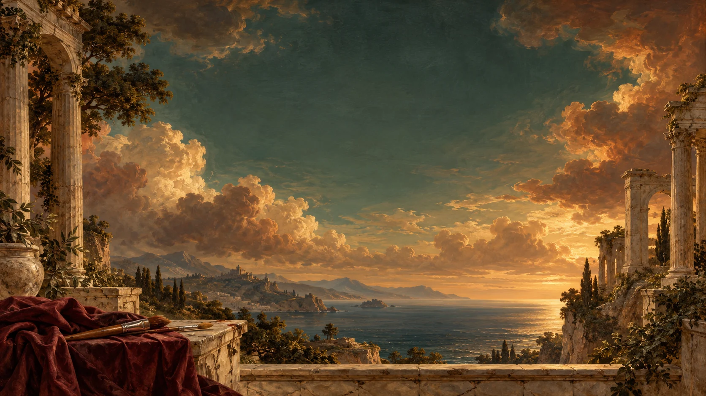

Bring a reference.
A portrait, a landscape, a moment worth keeping. Upload a photograph that stays on your device.

Turn your reference into expressive pencil drawings and colour paintings. Follow the work, one recorded stroke at a time.
Enter the atelier Explore the paintingsBetween observation
and interpretation.
Six studies made with the tool. Portraits, pencil, and colour: different ways of observing, with room for the unfinished.
Dürer colour · Supplied caption
Engine / strategy unrecorded
Dürer colour · Supplied caption
Engine / strategy unrecorded
Dürer colour · Supplied caption
Engine / strategy unrecorded
Leonardo colour · 5,480 marks
Material trials · Reconstruction study
Dürer pencil · 5,480 marks
Material trials · Reconstruction study
Rembrandt colour · 1,024 marks
Material trials · Coarse study
Supplied exports and recorded reconstruction studies, shown without retouching. Open a work for its provenance and strategy. The landscape and muse above are separate decorative brand illustrations.
A portrait, a landscape, a moment worth keeping. Upload a photograph that stays on your device.
Explore Leonardo, Dürer, or Rembrandt-inspired settings. Choose pencil or colour, then adjust tools, pigments, and interpretation.
Watch recorded paths take their place. Pause, replay, or seek through the work. Keep the result as PNG, SVG, or drawing JSON.
The reference beside you. The canvas in front of you. A compact tool chest, an editable palette, and controls that let you follow every stage.
Step inside the studioLocal processing · No account or API key · A downloadable offline edition
Actual export shown. Enter the studio to use the live controls and recorded playback.
The experimental visual model combines a visual encoder, recurrent memory, a region manager, and a material-aware stroke worker. Demonstrations and hierarchical reinforcement learning inform its development.
The studio also preserves earlier engines and explicit optimization strategies. Artist palettes and stage plans remain authored interpretations; quality varies with the subject and approach.
Read the methods & limitationsThe studio processes uploads locally. There is no painting API, account, or analytics in the application. A hosted visit downloads the application and its assets; the self-contained edition works from a saved file.
The engine creates ordered painting paths. The player executes those marks on the canvas; there is no hidden finished-photo reveal. SVG and drawing JSON preserve the full sequence. PNG saves the current progress.
The modes are restricted artist-inspired interpretations. Their palettes, stages, and tool preferences are authored. Complete historical style learning, authentic physical media, and reliable anatomical detail are not established.
Start with the preserved Recommended hand. Advanced settings expose earlier engines, the experimental visual policy, and optimization strategies. Not every strategy uses the learned policy, and outputs can differ substantially.
The self-contained release needs no connection after download. Experimental output settings support a 3840-pixel long edge, but resolution alone does not guarantee fine detail or realism. See the research notes for the known limitations.
A trained reference-free composition capability is not available in this release. Bring a photograph or use the offline sample. The decorative artwork on this page is separate from the drawing engine.